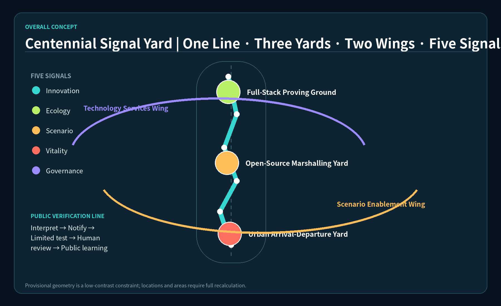
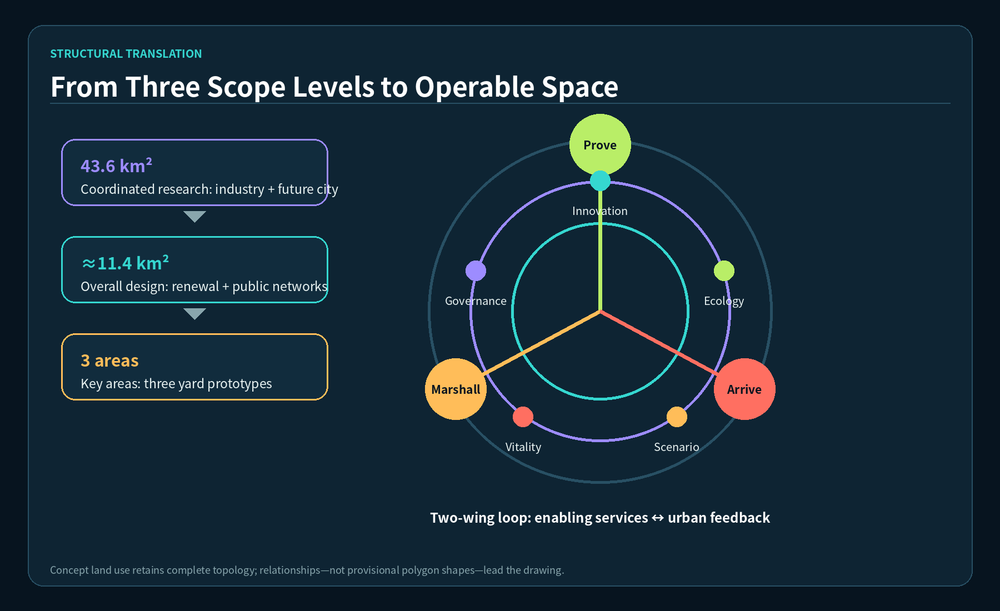
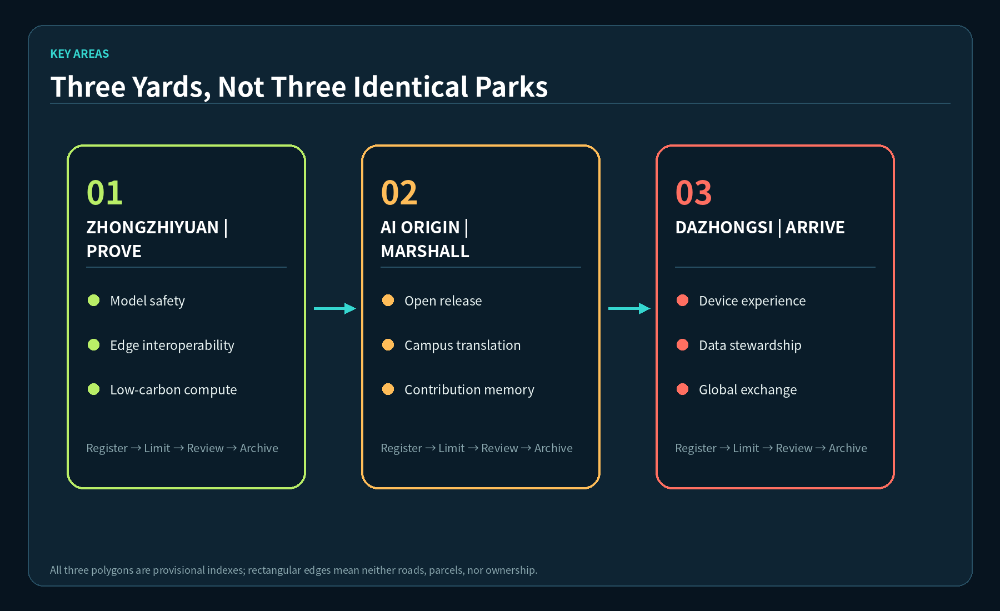
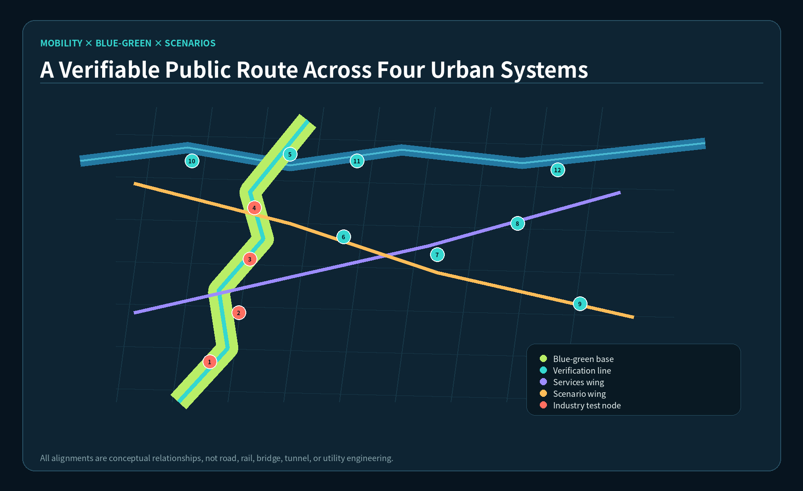
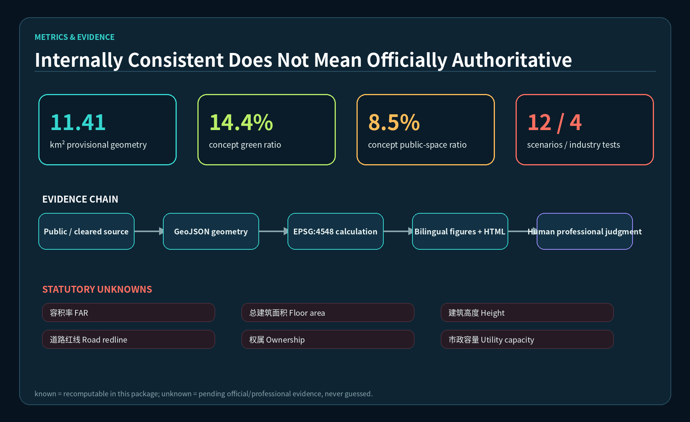

Overview Map

Three-Level Scope · Land-Use Zones

Coordinated research frames industry and future-city questions; overall design forms renewal and public networks; key areas test three yard prototypes. Concept land use covers the provisional envelope but is not statutory land use.
Key Areas

Mobility · Blue-Green Public Space

The heritage verification line, two wings, and twelve nodes express relationships only. Crossings, rail, utility, and blue-line conditions await professional verification.
Buildings · Renewal Projects
3Concept components: workshop, marshalling hall, arrival salon
8Professional work packages, not committed projects
unknownHeight, FAR, floor area, parcel DRR
AI Scenarios
Core Metrics

11.41 km²provisional internal calculation
14.4%concept green ratio
8.5%concept public-space ratio
Task Coverage
agent.1Concept and coordinationcovered
agent.2Full-stack ecosystemcovered
agent.3AI scenarios and personascovered
agent.4Public space and landmarkscovered
agent.5Cultural narrativecovered
agent.6Annual operationscovered
Self-Check Status
Target: PASS deterministic validation, spatial review, visual packaging, and professional evidence. PASS only enables content review.
| Boundary | provisional_constraint |
|---|---|
| Official polygon | unknown / pending |
| Human review | required |
Sources
OFFICIAL-ANNOUNCEMENT · AGENT-TASKBOOK · SITE-PACKAGE · GLOBAL-CASE-INDEX
Complete provenance, licenses, and limitations are in sources.json. International cases are mechanism background only.
Assumptions
- Site and key areas use provisional rough geometry.
- Controls, ownership, buildings, roads, utilities, heritage, and flood data are pending.
- Buildings, mobility, phasing, and annual operations are conceptual references.